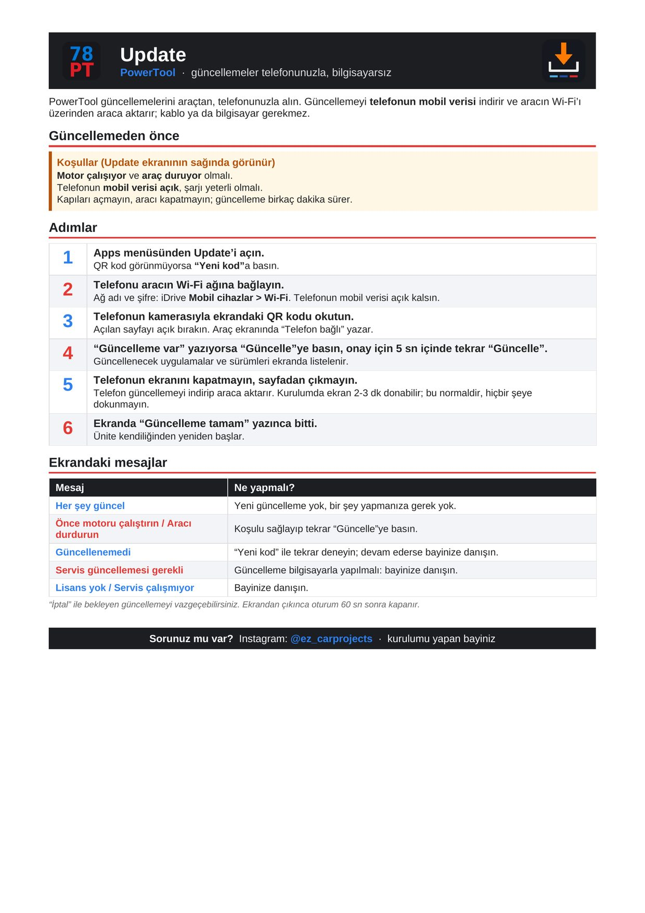
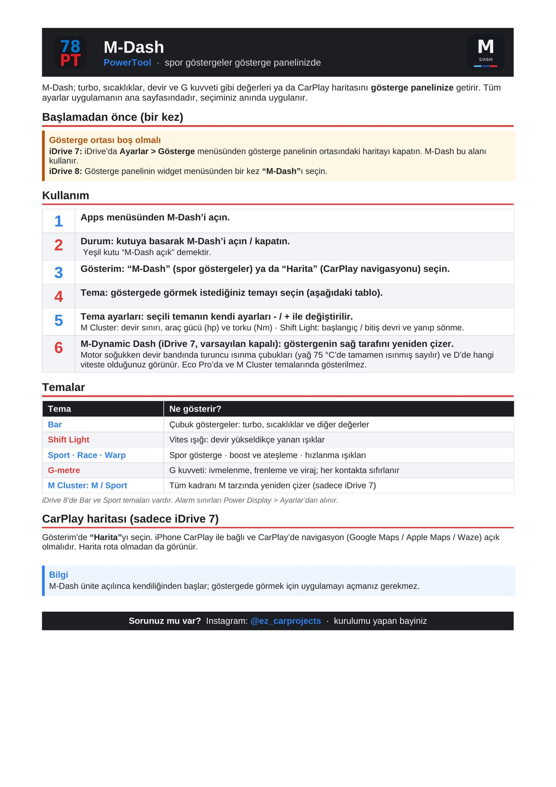
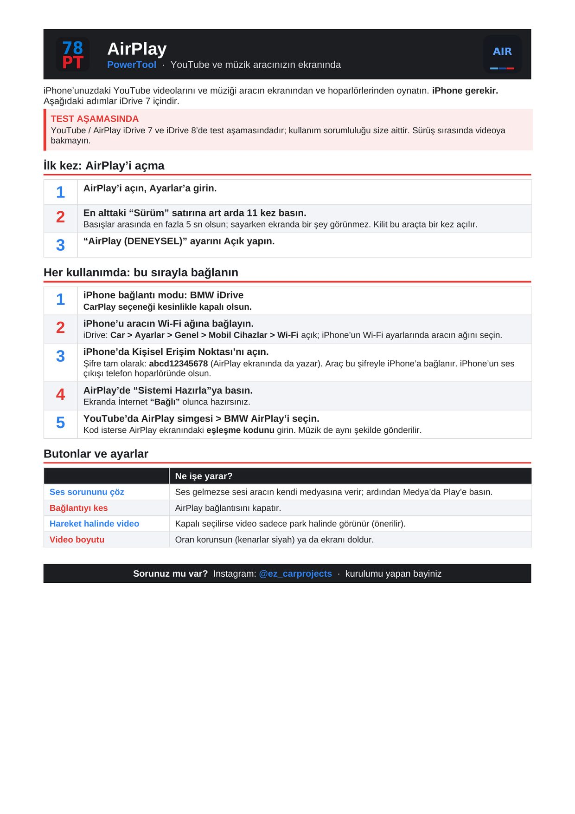
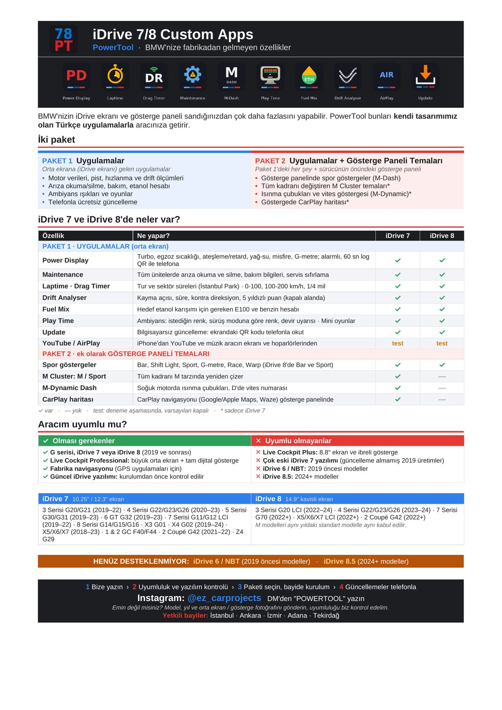

1 Update · telefonla güncelleme
Motor çalışırken ve araç dururken Update’i açın, telefonu aracın Wi-Fi ağına bağlayın (mobil veri açık), ekrandaki QR kodu okutun ve “Güncelle”ye iki kez basın. Telefonun ekranını kapatmayın.

PDF olarak aç2 M-Dash · gösterge paneli
M-Dash ünite açılınca kendiliğinden başlar. Tema, M-Dynamic Dash ve CarPlay haritası (sadece iDrive 7) M-Dash’in ana sayfasından seçilir.

PDF olarak aç3 YouTube / AirPlay
Test aşamasındadır, varsayılan olarak kilitlidir. Sürüş sırasında videoya bakmayın.

PDF olarak aç4 Tanıtım ve uyumluluk
Paketler, iDrive 7 / iDrive 8’de neler olduğu ve uyumlu araçlar.

PDF olarak aç